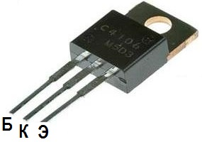

Транзистор 2SC4106(c4106)
Транзистор 2SC4106(С4106) разработан специально для применения в импульсных регуляторах.
Обозначение на корпусе транзистора 2SC4106 часто наносится без первой цифры и буквы, т.е. маркируется как "C4106". Корпус TO-220.

Рис. 1 - Внешний вид и цоколевка транзистора 2SC4106
Таблица 1
| Структура | n-p-n |
| Напряжение коллектор-эмиттер, не более | 400 В |
| Напряжение коллектор-база, не более | 500 В |
| Напряжение эмиттер-база, не более | 7 В |
| Ток коллектора, не более | 7 А |
| Рассеиваемая мощность коллектора, не более | 50 Вт |
| Коэффициент усиления транзистора по току (h21э) | 15...50 |
| 2SC4106L | 15 ... 30 |
| 2SC4106M | 20 ... 40 |
2SC4106N |
30 ... 50 |
| Граничная частота коэффициента передачи тока | 20 МГц |